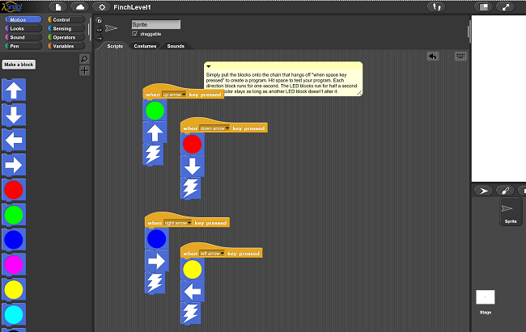

Kevin Aiken.
Full-stack web developer.
Produtcts
-
Data Encryption Form
- Manipulates strings of data in order to obsfucate the information.
Includes a decryption form.
- Manipulates strings of data in order to obsfucate the information.
-
Console Checkers
- Simple checkers game coded without classes.
-
Changebot Kiosk
- Back end of a self-checkout register.
-

Infiltrate Game placeHolder
- First collaberative game created using GML.
-
Chase Runner Game
- Chase Runner is a game I made by myself in a week's time in GML for a coding jam. It was made entirely made by me except for the sound effects and music.
Languages and Platforms
-

C#
-
Visual Studio 2017
-
Gamemaker Studio 2
- GML is a C-like that uses sprites, scripts and more to create games.
-

Scratch
- Drag-and-drop block based programming language useful for introducing coding concepts to children.
-
OVAL
- OVAL is a subset of the computer language C with features that support streaming and asynchronous communication.
Experience
-
CSMD Coding Week
- Snap and OVAL were utilized during 11/18 and 2/19 CMSD Coding Week to introduce 2nd and 5th graders, respectively, to coding principles. During the week-long events the children would be given a short presentation and rotated through 5 stations designed to get them interested in computer sciences.
- My contributions to this project:
-
- Original draft of the PowerPoint used in the presentation.
- Designed cut-out code game and helped man the station.